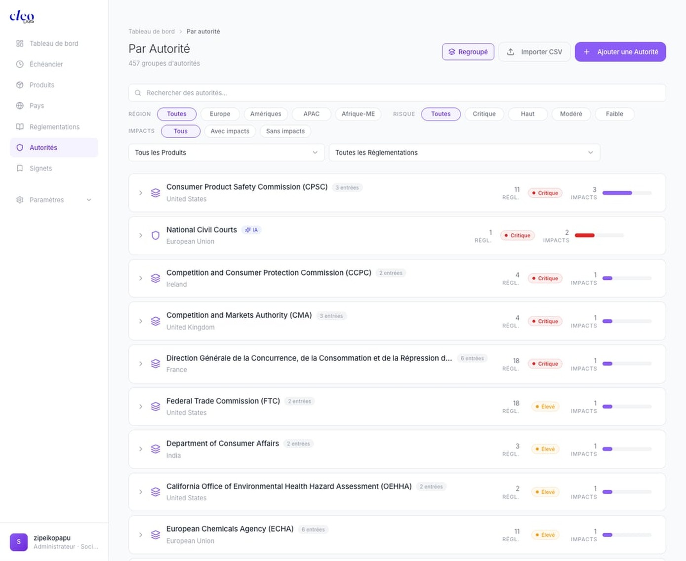
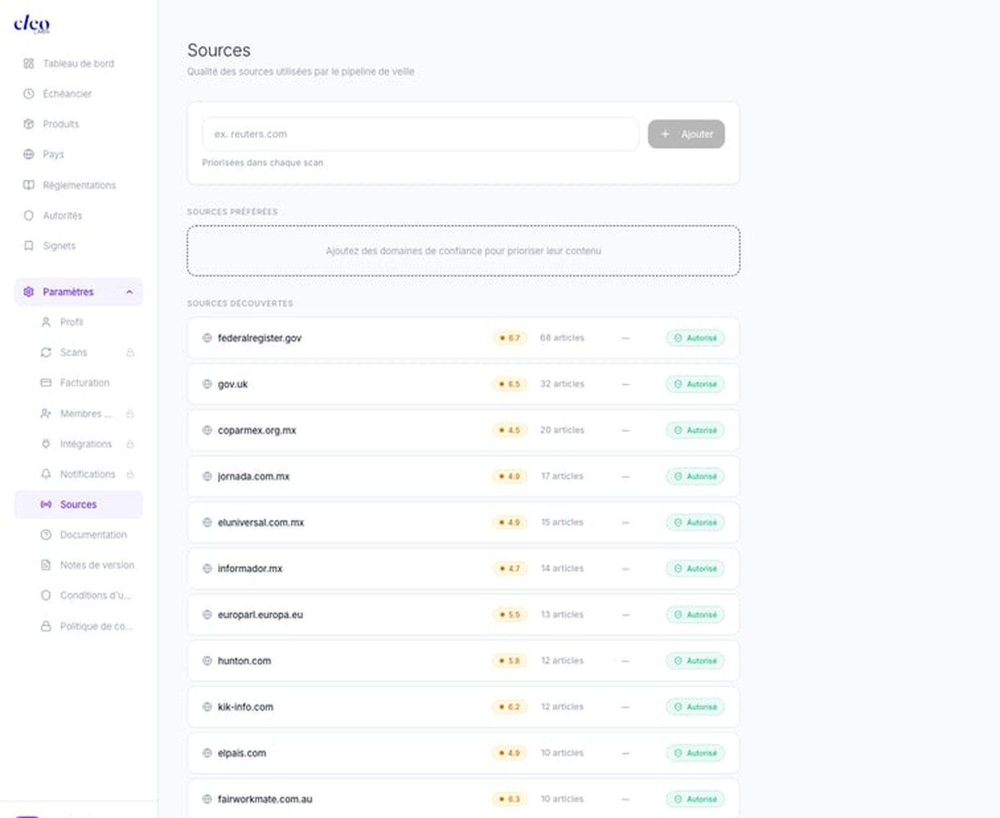

Tout ce qu'il faut savoir pour prendre en main la plateforme. Scrollez, c'est dans l'ordre.
Votre page d'accueil. C'est là que vous atterrissez chaque matin.
Nombre de nouveaux signaux depuis votre dernière visite. La petite courbe montre la tendance.
Votre niveau de risque global. Cleo regarde tous vos produits et marchés et vous résume la situation en un mot.
Compteur à rebours vers votre prochaine date réglementaire. Toujours visible.
Le nombre total de lois surveillées. Déjà pré-rempli.
Filtrez les signaux par urgence. "Critique" = ce que vous checkez en premier.
"Adopté" = lois votées mais pas encore en vigueur. Votre fenêtre d'anticipation. Le filtre le plus important.
Tout est combinable pour affiner.
Chaque carte = un signal. La structure est toujours la même :
| Élément | Ce que ça veut dire |
|---|---|
| SANCTION | Amende ou pénalité prononcée |
| RECOMMANDATION | Nouvelle guideline ou obligation à venir |
| ANALYSE | Veille informationnelle |
| 🇺🇸 CPSA · 6j | Loi, pays, ancienneté |
| 10 produits impactés | Combien de vos gammes sont concernées |
| High | Niveau de risque |
À droite : vos 5 prochaines dates avec le compteur "X jours restants". "Voir tout" ouvre l'échéancier complet.
Salut, bienvenue sur Cleo Insight. Je vais vous faire un tour complet de la plateforme. On commence par le tableau de bord, c'est votre page d'accueil, c'est là que vous atterrissez chaque matin.
En haut, quatre chiffres clés. On va les regarder un par un.
[ACTION : Pointe "NOUVEAUX"]"Nouveaux" — 9 nouveaux signaux depuis la dernière visite. La courbe c'est la tendance.
[ACTION : Pointe "EXPOSITION"]"Exposition" — "Élevé" en orange. Votre niveau de risque global. Orange = des sujets à traiter.
[ACTION : Pointe "ÉCHÉANCE"]"Échéance" — 100 jours. Votre prochaine deadline réglementaire.
[ACTION : Pointe "RÉGLEMENTATIONS"]"Réglementations" — 832 lois surveillées. Déjà pré-rempli.
[ACTION : Pointe les filtres]En dessous, les filtres. "Impact" pour filtrer par criticité. "Statut" — et là "Adopté" c'est mon préféré : les lois votées mais pas encore en vigueur. Votre fenêtre d'anticipation.
[ACTION : Scrolle vers les cartes]Le fil de signaux. Chaque carte : un badge type, la loi, le pays, le titre, les produits impactés, le niveau de risque. Le signet à droite pour sauvegarder.
[ACTION : Pointe la sidebar]Sur le côté droit, l'échéancier rapide. Vos cinq prochaines dates. "Voir tout" pour la vue complète.
[ACTION : Pointe "Actualiser"]Et le bouton "Actualiser" — Cleo rescanne toutes les sources. Premier geste le lundi matin.
Vous cliquez sur un signal, et voilà ce que vous trouvez dedans. C'est le cœur de Cleo.
Type · Loi · Pays · Score de pertinence (%) · Niveau de risque. En 2 secondes vous savez si c'est urgent.
Texte adapté à votre poste. Un DPO voit un angle données. Un juriste voit un angle juridique. Même signal, résumés différents.
Le lien direct entre l'événement et votre entreprise. Pas un résumé de la loi — pourquoi ça vous concerne vous.
Vos produits à vous, croisés automatiquement avec le signal. Pas des catégories génériques.
Base juridique exacte. Checkbox de suivi. Responsable assigné. Votre checklist conformité.
Qui fait quoi, quand, sur quelle base juridique, pour quels produits. Prêt à copier-coller.
L'histoire complète, votre position vs concurrents, à qui remonter.
Lien officiel, 👍👎 pour améliorer, 🔖 pour sauvegarder.
La fiche signal. C'est là que toute la valeur se concentre. On descend section par section.
[ACTION : Pointe l'en-tête]En haut : le type, la loi, le pays, le score de pertinence et le risque. En deux secondes vous savez si c'est urgent.
[ACTION : Scrolle vers "Résumé pour votre rôle"]Le résumé pour votre rôle. Ce texte est adapté à votre poste. DPO = angle données. Qualité produit = angle conformité. Ça dépend de votre Profil.
[ACTION : Scrolle vers "Impact"]L'impact. C'est le lien entre l'événement et votre entreprise. L'analyse de 2h en 3 secondes.
[ACTION : Pointe le panneau droit]Vos produits impactés — ceux de votre catalogue, croisés avec le signal.
[ACTION : Scrolle vers "Obligations"]Les obligations juridiques avec la base légale exacte. Checkboxes et responsables.
[ACTION : Scrolle vers "Plan d'action"]Le plan d'action. Qui, quoi, quand, quelle base juridique. Prêt à copier-coller.
[ACTION : Scrolle vers le bas]Contexte, exposition concurrentielle, escalade. Source officielle et feedback.
Votre calendrier réglementaire. Toutes les dates, mois par mois.
Point violet = aujourd'hui. Tout ce qui est en dessous = ce qui arrive.
Date exacte · Compteur "Xj restants" (rouge = critique, orange = à surveiller) · Titre · Loi associée.
30 jours (urgences) · 90 jours (trimestriel) · 6 mois · Tous.
Tous · Critique · Élevé · Moyen · Faible. Combinable avec Horizon.
La timeline. Le point violet c'est aujourd'hui. Dates organisées mois par mois.
[ACTION : Pointe une échéance]Chaque échéance : date, compteur coloré, titre, loi.
[ACTION : Clique "90 jours" + "Critique"]90 jours plus Critique. Votre slide trimestrielle. Capture d'écran, dans votre présentation, la direction comprend en dix secondes.
L'échéancier c'est le lundi matin. Actualiser, 90j Critique, deux minutes.
Vos marchés. Cleo surveille les réglementations de chaque pays où vous vendez.
Rouge = critique · Orange = élevé · Gris = pas encore surveillé.
Bouton violet "+" → sélectionnez → Cleo commence la surveillance. "Importer CSV" pour plusieurs d'un coup.
Cliquez sur la flèche → chaque État membre avec ses propres impacts. Utile quand les transpositions varient.
État par état. Essentiel : la Californie (Prop 65) a des règles beaucoup plus strictes que le fédéral.
Région (Europe/Amériques/APAC/Afrique-ME) · Impacts (Avec/Sans) · Produit.
La carte mondiale. Rouge critique, gris pas encore surveillé.
[ACTION : Clique "+ Ajouter un pays"]On sélectionne, Cleo surveille et croise avec vos produits.
[ACTION : Déplie l'UE]L'UE en pays membres. Chaque État avec ses impacts.
[ACTION : Déplie les US]Les US par État. La Californie avec la Prop 65, beaucoup plus strict que le fédéral.
[ACTION : Clique "Europe" + "Avec impacts"]Votre brief conformité européen.
832 lois et 457 autorités surveillées automatiquement.
Nom · Badge IA · Juridiction · Autorité · Risque · Impacts.
"Standard" par défaut. Passez en "Renforcée" pour les lois critiques → scan plus fréquent, signaux en priorité.
Lois votées mais pas encore en vigueur. Votre fenêtre pour anticiper.
"+ Ajouter une réglementation" → tapez le nom → Cleo enrichit automatiquement.

Nom · Pays · Nb de réglementations · Risque · Impacts · Barre d'activité.
Cliquez la flèche → les réglementations de chaque autorité. Ex : CPSC → CPSA, CPSIA, Import Rules.
Quand le compteur d'impacts monte vite (2→8 en un mois) = renforcement des contrôles.
Regroupé = vue stratégique. Détaillé = vue audit.
832 lois. Pour chaque loi : nom, autorité, risque, impacts, priorité.
[ACTION : Passe une loi en "Renforcée"]La priorité. Renforcée = scan plus fréquent. Pour vos lois critiques.
[ACTION : Clique "Adopté"]Les lois votées pas encore en vigueur. C'est là que vous anticipez.
[ACTION : Clique "Autorités"]457 groupes. CPSC, DGCCRF, ECHA, CMA.
[ACTION : Déplie une autorité]Les réglementations de chaque autorité. Surveillez la dynamique : impacts qui montent vite = contrôles renforcés.
Là où vous configurez tout : votre rôle, vos crédits, et d'où vient l'information.
Département + Rôle = ce qui personnalise tous les résumés. Juridique + DPO → angle données. Conformité + Qualité → angle produit. Première chose à configurer.
Chaque "Actualiser" consomme des crédits. Plan Pro : 5 000/mois. Les crédits achetés n'expirent pas.

Cleo scanne des sources officielles. Chaque source a un domaine, un score de qualité (/10), un nombre d'articles, et un statut.
Note de fiabilité. Un registre gouvernemental (federalregister.gov = 6.7) sera toujours plus haut qu'un blog.
"Autorisé" en vert = Cleo l'utilise. Vous pouvez la passer en "Bloqué" si elle n'est pas pertinente. Cleo ne l'utilisera plus.
En haut de la page. Tapez un domaine → "Ajouter". Cleo le priorise dans chaque scan. Utile pour vos sources métier spécifiques.
| Section | Ce que c'est |
|---|---|
| Facturation | Gérer votre plan : Gratuit · Pro · Enterprise |
| Membres | Inviter l'équipe (Pro : 5 membres, chacun avec son profil) |
| Intégrations | Connecter Slack pour recevoir les alertes dans un channel |
| Notifications | Alertes critiques · Digest hebdo · Rappels d'échéance |
Le profil. Département + Rôle = ce qui personnalise tout. Première chose à configurer.
[ACTION : Clique "Scans"]Les crédits. Chaque Actualiser en consomme. 5 000/mois en Pro.
[ACTION : Clique "Sources"]Les sources. Chaque source a un score de qualité. "Autorisé" = Cleo l'utilise. Vous pouvez bloquer ou ajouter des sources préférées.
[ACTION : Pointe un score]Le score c'est la fiabilité. Registre gouvernemental > blog.
[ACTION : Pointe "Sources préférées"]Ajoutez vos sources de confiance ici. Elles sont priorisées dans chaque scan.
2 minutes le lundi matin.
Bouton en haut à droite. Cleo scanne toutes les sources.
Filtre "Critique" sur le tableau de bord. Ouvrir les signaux urgents.
Capture d'écran → slide direction. Fait.